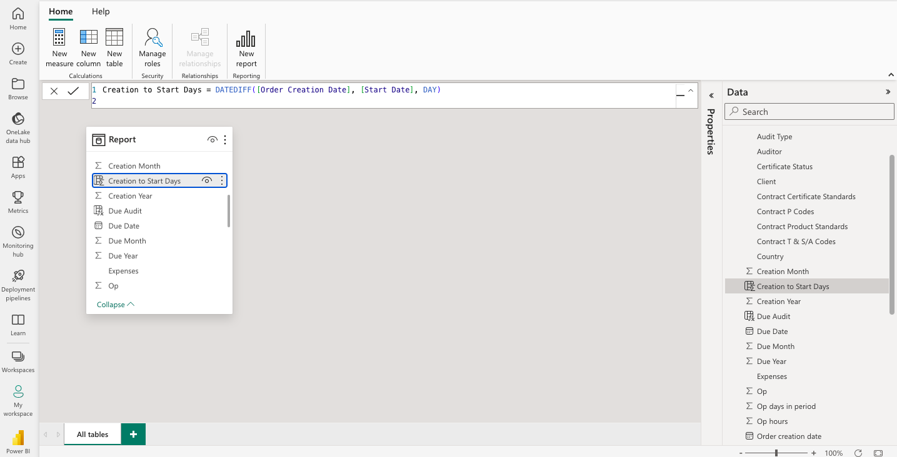

Project Details
Audit Efficiency and Effectiveness
Introduction
This project aimed to leverage audit operations data to gain insights into audit efficiency and timing issues in order to recommend improvements. Optimizing audits is crucial given their time-sensitive nature.
Data Overview 📈
This project aimed to leverage audit operations data to gain insights into audit efficiency and timing issues in order to recommend improvements. Optimizing audits is crucial given their time-sensitive nature.
Analysis Approach
Using Power BI, the analysis revolved around developing visualizations and aggregations that would uncover trends related to audit delays, auditor workload distribution, and geographic performance. This would pinpoint areas needing enhancement.I have incorporated the use of DAX measures for deriving additional metrics/KPIs that complemented the base data. This provided a richer analytical perspective into the audit efficiency issues faced. The combined approach of visualization plus DAX measures enabled a granular, insightful analysis.
Key Insights
The analysis surfaced issues like 40% of audits remaining unbooked indicating delays, an unequal distribution of hours amongst auditors, and an exceptionally high UK audit workload based on orders and days.
Recommendations
Key recommendations included improving audit planning to reduce unbooked days, redistributing assignments to balance auditor workloads, and allocating more UK auditing resources to match the order and day volumes.